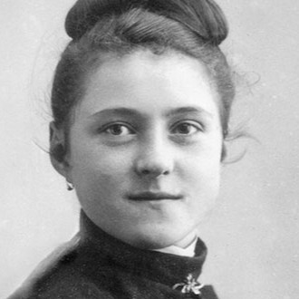

About

Little Way Speech Therapy is a sole proprietorship owned and operated by speech-language pathologist Kathleen "Kat" Winger, M.S., CCC-SLP, in San Diego, California.
Kat has been working with children of all ages in pediatric private practice since 2019, both in clinic and in home health. She is trained in PROMPT, Kaufman, Lidcombe, TalkTools, Orton-Gillingham, Lively Letters, and Natural Language Acquisition approaches.

Our Approach
Little Way Speech is grounded in the belief that no act of care is too small when done with great love. Inspired by St. Thérèse of Lisieux’s “Little Way” , this philosophy reflects patience, compassion, and the belief that small moments of connection can lead to meaningful growth.

What We Value
Individualized Care
Every child’s communication journey is unique, and therapy is thoughtfully tailored to meet their needs.
Family Collaboration
We partner closely with families to support progress beyond the therapy session.
Evidence-Based Practice
Therapy approaches are grounded in research and clinical best practices.
Let’s Connect
If you’d like to learn more about services or discuss your child’s needs, we’d love to hear from you.
Contact Us